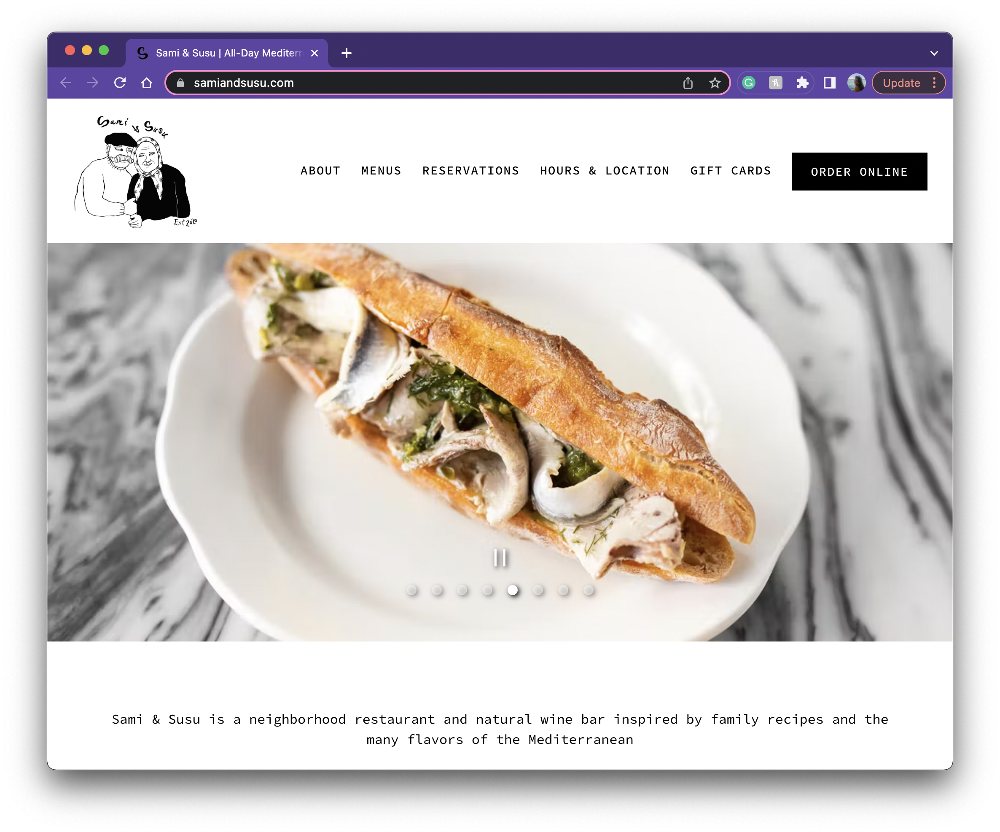
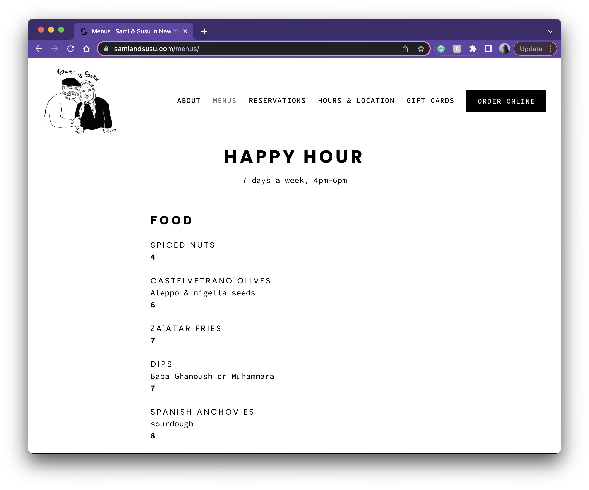
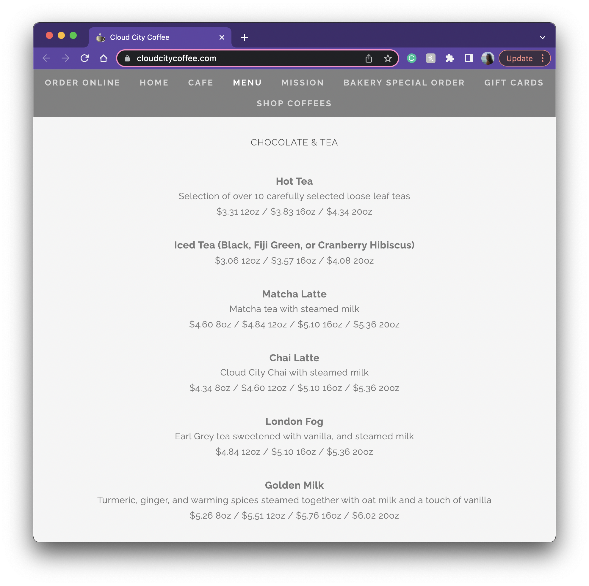
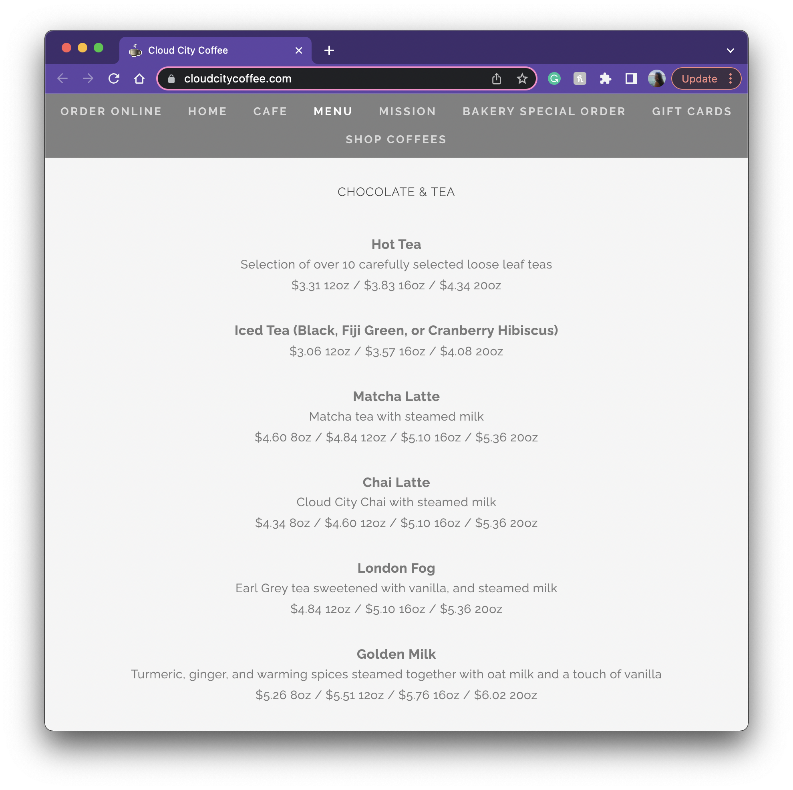
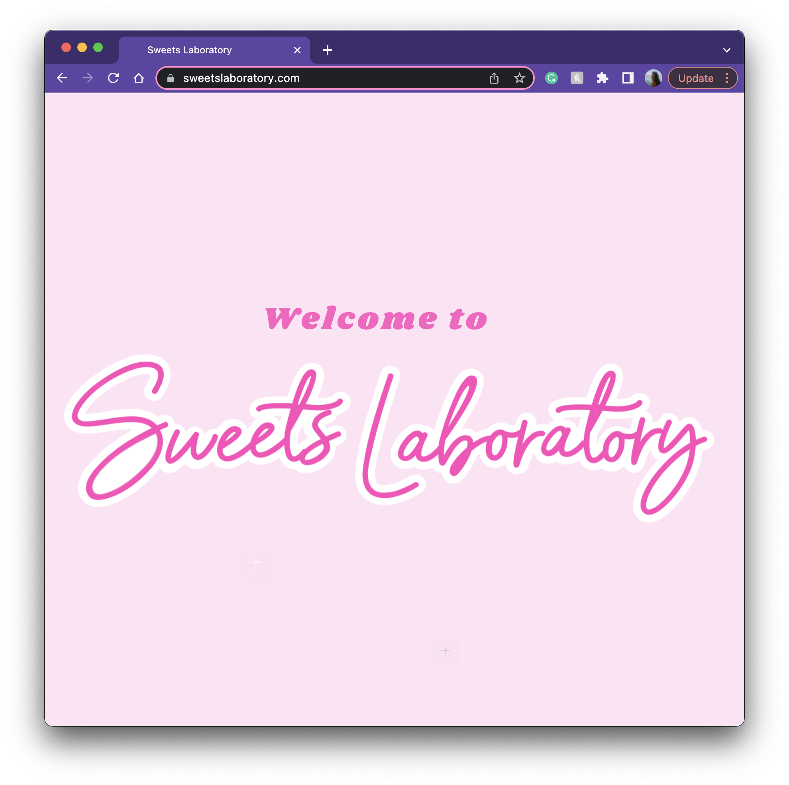
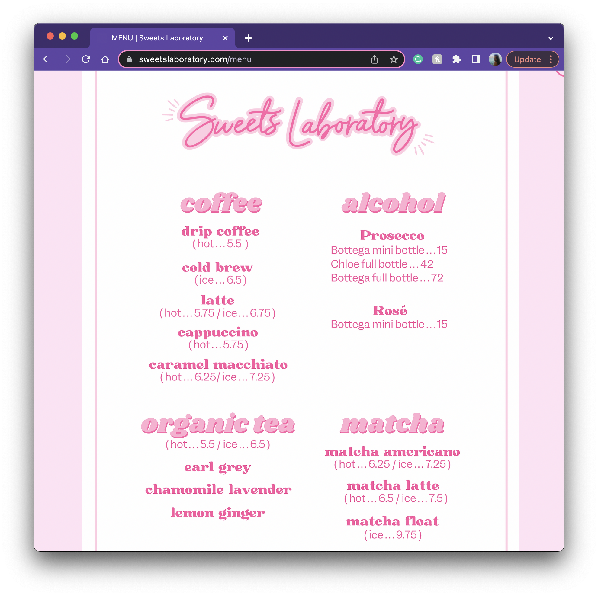

Final project proposal
Introduction
Common Grounds
Coffee shop located in San Luis Obispo. Common Grounds is a great place to study or work and offers a variety of coffee and tea!
Target audience
The website is intended for mostly student use as the location will be just off of the Cal Poly campus. Here students will be able to learn more about us, check out the menu, and find our location.
Common Grounds is a place for students to come do their homework while enjoying a nice beverage.
Comparative analysis
Sami and Susu
 Cloud City Coffee
 

Sweets Laboratory
 Navigation
Home
At Common Grounds, you will find our own locally roasted, specialty coffeeand a variety of teas prepared in-house by our fantastic team. Common Grounds is not simply a café, it's a community. Please join us. All are welcome.
[People drinking coffee at a Café]
About
Commons Grounds stives to provide a friendly, comfortable atmosphere where customers can receive quality drinks, service and entertainment at a reasonable price. In May of 2022, we launched Common Grounds on Foothill Blvd just outside of California Polytechnic Sate University San Luis Obispo. We now have over 40 wonderful employees, and love that you have made Common Grounds one of the most sought after destinations on the Central Coast. Thank you so much to all of you who have made this possible. Our goal has always been to create inspiring spaces, with great people and amazing products, in a way that truly adds value to the community around us. We hope you love it here.
[Outside of building]
Menu
- Espresso - Our smooth signature Espresso Roast with rich flavor and caramelly sweetness is at the very heart of everything we do. - 4
- Caramel Macchiato - Freshly steamed milk with vanilla-flavored syrup marked with espresso and topped with a caramel drizzle for an oh-so-sweet finish.- 4
- Cappucino - Dark, rich espresso lies in wait under a smoothed and stretched layer of thick milk foam. - 5
- Americano - Espresso shots topped with hot water create a light layer of crema culminating in this wonderfully rich cup with depth and nuance - 3
- Cold Brew - Made from our custom blend of beans grown to steep long and cold for a super-smooth flavor - 5
- Matcha - Smooth and creamy matcha sweetened just right and served with steamed milk. - 5
- Iced Tea - Premium black tea is shaken with ice. It's the ideal iced tea—a rich and flavorful black tea journey awaits you. - 3
- Chai Tea Latte - Black tea infused with cinnamon, clove and other warming spices is combined with steamed milk and topped with foam for the perfect balance of sweet and spicy - 4
[Common grounds tea variety]
Location
Common Grounds at 1468 E Foothill Blvd San Luis Obispo, CA 93405 is located near the heart of the Cal Poly campus. Parking can be limited on Foothill Blvd, but you'll find metered street parking on all surrounding streets, and we have bike parking available a few steps from our front door. Our phone number is 805.439.2175. We hope to see you soon!
[Pinned location of store on map]